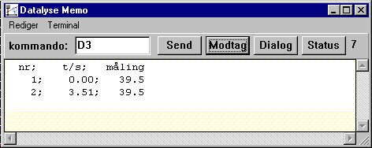
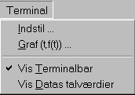
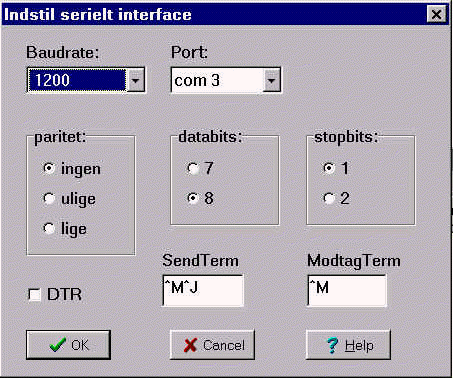

Datalyses terminal kan bruges til at teste forbindelsen til et apparat. Knappernes betydning er beskrevet herunder:

Ved Dialog beregner Datalyse tiden siden første måling, og måling nr, tid og selve målingen skrives i memoen. Data kan kopieres til regneark, og en graf kan tegnes.
Jeg har snydt lidt, jeg har først valgt Apparatet Energimeter og målt effekt. Da jeg derefter valgte Terminalprogrammet, var kommandoen for måling af effekt »D3« indsat.
På billedet er der to gange klikket på »Dialog«.
Dernæst er der klikket på send. Derfor er 7 tegn klar til modtagelse.
Men inden man kan kommunikere med et apparat skal man vælge Terminal | Indstil...

Terminal | Indstil... giver følgende menu:

Her vælges Baudrate, databits, stopbits, paritet og comport. og DTR.
Se eventuelt oplysninger om Baudrate med videre under de enkelte apparater.
^M er det samme som CR (#13) og ^J er LF(#10).
Bemærk, at ModtagTerm er ét tegn, nemlig sidste tegn som apparatet svarer med. Når det tegn er modtaget ved datalyse at der ikke kommer flere tegn.
Mange apparater benytter kun ^M for SendTerm. Nogle apparater har ingen SendTerm.
Når kommunikationen er afprøvet og den virker, kan man i terminalprogrammet vælge Grafisk måling. Man må dog huske, at en del apparater sender en masse gøgl til pc'en. I så fald vil grafisk måling være meningsløs.